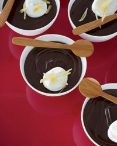

Dark Chocolate Pudding With Candied Ginger

Description
"For me, ginger should be everywhere," says Jean-Georges Vongerichten. "It's as good in marinades and vinaigrettes as it is in dessert." Here, candied ginger garnishes dark-chocolate pudding.
Ingredients
- 1/2 cup plus 1 tablespoon sugar
- 1/2 cup unsweetened cocoa powder
- 5 1/2 tablespoons cornstarch
- 1/4 teaspoon salt
- 1 quart half-and-half
- One 3.5-ounce bar bittersweet chocolate, chopped
- 1 teaspoon pure vanilla extract
- Lightly sweetened whipped cream and sliced candied ginger, for serving
Steps
- In a medium bowl, sift together the sugar, cocoa powder, cornstarch and salt. In a large saucepan, add the half-and-half and whisk in the cocoa-powder mixture. Cook over moderate heat, whisking, until the pudding starts to bubble and thicken, about 4 minutes. Remove from the heat and stir in the bittersweet chocolate and vanilla. Pour the pudding into 6-ounce ramekins and let cool, then cover and refrigerate until chilled, about 1 hour. Top each pudding with whipped cream and candied ginger and serve.